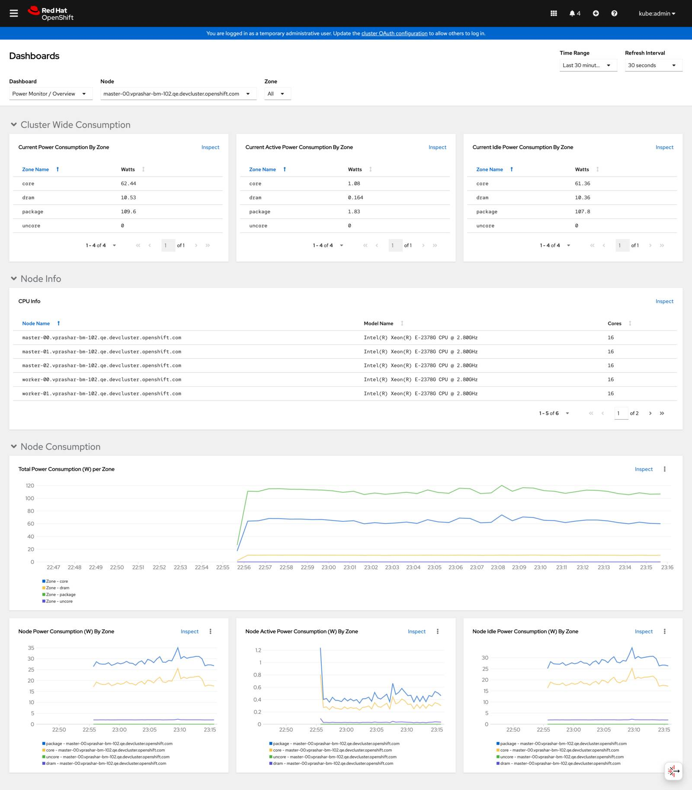

监控和故障排除
机器翻译声明
本文档由 AI 语言模型 (Claude) 从英文自动翻译而成。如发现翻译错误或不准确之处，请在 Kepler 文档项目 中提交 issue 报告问题。
本指南涵盖为您的 Kepler 部署设置监控和解决常见问题。它包括 OpenShift 特定的监控配置、Grafana 集成和系统化的故障排除方法。
监控设置
启用用户工作负载监控
确保在您的 OpenShift 集群中启用用户工作负载监控：
# 检查当前配置
oc -n openshift-monitoring get configmap cluster-monitoring-config -o yaml
如果未启用用户工作负载监控，请创建或更新配置：
apiVersion: v1
kind: ConfigMap
metadata:
name: cluster-monitoring-config
namespace: openshift-monitoring
data:
config.yaml: |
enableUserWorkload: true
应用配置：
oc apply -f cluster-monitoring-config.yaml
验证 ServiceMonitor 创建
Kepler Operator 自动为 Prometheus 集成创建 ServiceMonitor 资源：
# 检查 ServiceMonitor
oc get servicemonitor -n power-monitor
# 查看 ServiceMonitor 配置
oc get servicemonitor -n power-monitor -o yaml
预期输出：
NAME AGE
kepler-exporter 5m
访问 OpenShift 指标
在 OpenShift 控制台中导航到 Observe → Metrics 以查看功耗指标：
 显示功耗概览的 OpenShift 指标仪表板
要监控的关键指标
在 OpenShift 控制台中查询这些指标：
# 节点功耗
kepler_node_power_total
# Pod 功耗
kepler_pod_power_total
# 容器能耗
kepler_container_energy_total
# 进程功耗
kepler_process_power_total
测试指标端点
验证指标是否正确导出：
# 端口转发到指标端点
oc port-forward -n power-monitor svc/kepler-exporter 9102:9102
# 测试指标端点（在另一个终端中）
curl http://localhost:9102/metrics | grep kepler_node_power_total
# 检查指标可用性
curl -s http://localhost:9102/metrics | grep -c "kepler_"
预期：应返回多个以 kepler_ 开头的指标。
Grafana 集成
导入 Kepler 仪表板
对于高级可视化，导入官方 Kepler Grafana 仪表板：
# 下载仪表板 JSON
curl -O https://raw.githubusercontent.com/sustainable-computing-io/kepler-operator/v1alpha1/hack/dashboard/assets/kepler/dashboard.json
然后导入到您的 Grafana 实例：
- 打开 Grafana
- 转到 Dashboards → Import
- 上传
dashboard.json文件 - 配置数据源（Prometheus）
自定义 Grafana 查询
Grafana 仪表板的有用 PromQL 查询：
# 总集群功耗
sum(kepler_node_power_total)
# 按节点的功耗
kepler_node_power_total
# 前 10 个功耗最高的 Pod
topk(10, kepler_pod_power_total)
# 功耗率（瓦特）
rate(kepler_node_energy_total[5m])
# CPU 与功耗相关性
kepler_node_power_total / on(instance) kepler_node_cpu_usage_percentage * 100
故障排除
常见问题和解决方案
问题：PowerMonitor 未创建 DaemonSet
症状：
- PowerMonitor 存在但未创建 DaemonSet
- 状态显示带有错误的条件
诊断：
# 检查 PowerMonitor 状态和条件
oc describe powermonitor power-monitor
# 检查 operator 日志
oc logs -n openshift-operators deployment/kepler-operator-controller-manager
解决方案：
- 检查 RBAC 权限：
# 验证 operator 服务账户权限
oc auth can-i create daemonsets --as=system:serviceaccount:openshift-operators:kepler-operator-controller-manager
# 如果权限缺失，检查 ClusterRole
oc describe clusterrole kepler-operator-manager-role
- 验证资源配额：
# 检查命名空间资源配额
oc describe resourcequota -n power-monitor
# 检查配额是否阻止创建
oc get events -n power-monitor | grep -i quota
问题：Pod 未在节点上调度
症状：
- DaemonSet 已创建但 Pod 保持 Pending 状态
- Pod 显示 FailedScheduling 事件
诊断：
# 检查 Pod 状态和事件
oc get pods -n power-monitor
oc describe pods -n power-monitor
# 检查节点标签和污点
oc get nodes --show-labels
oc describe nodes | grep -i taint
解决方案：
- 更新节点选择器：
# 检查可用的节点标签
oc get nodes --show-labels | grep kubernetes.io/os
# 更新 PowerMonitor nodeSelector
oc patch powermonitor power-monitor --type='merge' -p='
{
"spec": {
"kepler": {
"deployment": {
"nodeSelector": {
"kubernetes.io/os": "linux"
}
}
}
}
}'
- 为有污点的节点添加容忍度：
# 为主节点添加容忍度
oc patch powermonitor power-monitor --type='merge' -p='
{
"spec": {
"kepler": {
"deployment": {
"tolerations": [
{
"key": "node-role.kubernetes.io/master",
"operator": "Exists",
"effect": "NoSchedule"
}
]
}
}
}
}'
问题：监控中缺少指标
症状：
- Pod 正在运行但指标未在 OpenShift 控制台中显示
- ServiceMonitor 存在但 Prometheus 中无数据
诊断：
# 检查 ServiceMonitor 配置
oc get servicemonitor -n power-monitor -o yaml
# 检查服务端点
oc get endpoints -n power-monitor
# 直接测试指标端点
oc port-forward -n power-monitor svc/kepler-exporter 9102:9102
curl http://localhost:9102/metrics | head -20
解决方案：
- 验证用户工作负载监控：
# 检查是否启用了用户工作负载监控
oc -n openshift-monitoring get configmap cluster-monitoring-config -o yaml
# 检查用户工作负载监控 Pod
oc get pods -n openshift-user-workload-monitoring
- 检查 ServiceMonitor 标签：
# 确保 ServiceMonitor 具有正确的发现标签
oc patch servicemonitor kepler-exporter -n power-monitor --type='merge' -p='
{
"metadata": {
"labels": {
"app.kubernetes.io/name": "kepler-exporter"
}
}
}'
问题：高资源使用率
症状：
- Kepler Pod 消耗过多 CPU 或内存
- 集群性能下降
诊断：
# 检查资源使用情况
oc top pods -n power-monitor
# 检查当前配置
oc get powermonitor power-monitor -o yaml | grep -A 10 config
解决方案：
- 减少指标粒度：
# 仅减少到节点和 Pod 指标
oc patch powermonitor power-monitor --type='merge' -p='
{
"spec": {
"kepler": {
"config": {
"metricLevels": ["node", "pod"],
"sampleRate": "10s"
}
}
}
}'
- 限制已终止工作负载跟踪：
# 减少已终止工作负载跟踪
oc patch powermonitor power-monitor --type='merge' -p='
{
"spec": {
"kepler": {
"config": {
"maxTerminated": 100
}
}
}
}'
高级调试
启用调试日志
对于详细的故障排除，启用调试日志：
# 启用调试日志
oc patch powermonitor power-monitor --type='merge' -p='
{
"spec": {
"kepler": {
"config": {
"logLevel": "debug"
}
}
}
}'
# 查看调试日志
oc logs -n power-monitor -l app.kubernetes.io/name=kepler-exporter -f
记住在生产环境中禁用调试日志：
oc patch powermonitor power-monitor --type='merge' -p='
{
"spec": {
"kepler": {
"config": {
"logLevel": "info"
}
}
}
}'
收集诊断信息
为支持创建诊断脚本：
#!/bin/bash
# kepler-diagnostics.sh
echo "=== Kepler 诊断 ==="
echo "日期：$(date)"
echo "集群：$(oc cluster-info | head -1)"
echo
echo "=== PowerMonitor 状态 ==="
oc get powermonitor power-monitor -o wide
echo
echo "=== PowerMonitor 条件 ==="
oc describe powermonitor power-monitor | grep -A 20 "Conditions:"
echo
echo "=== DaemonSet 状态 ==="
oc get daemonset -n power-monitor
echo
echo "=== Pod 状态 ==="
oc get pods -n power-monitor -o wide
echo
echo "=== 最近事件 ==="
oc get events -n power-monitor --sort-by='.lastTimestamp' | tail -10
echo
echo "=== ServiceMonitor ==="
oc get servicemonitor -n power-monitor
echo
echo "=== Operator 日志（最后 50 行）==="
oc logs -n openshift-operators deployment/kepler-operator-controller-manager --tail=50
运行：
chmod +x kepler-diagnostics.sh
./kepler-diagnostics.sh > kepler-diagnostics-$(date +%Y%m%d-%H%M%S).log
性能调优
推荐的生产设置
对于有性能考虑的生产环境：
spec:
kepler:
config:
logLevel: warn
metricLevels: [node, pod] # 避免进程/容器级别
sampleRate: 10s # 减少采样频率
maxTerminated: 500 # 限制内存使用
deployment:
nodeSelector:
node-role.kubernetes.io/worker: "" # 避免主节点
资源限制
为 Kepler Pod 设置资源限制：
spec:
kepler:
deployment:
resources:
limits:
cpu: 200m
memory: 256Mi
requests:
cpu: 100m
memory: 128Mi
获取帮助
如果您继续遇到问题：
- 检查日志，使用上面的诊断脚本
- 搜索现有问题，在 Kepler Operator 仓库中
- 提交新问题，附带诊断信息
- 加入社区 - 查看支持了解社区渠道